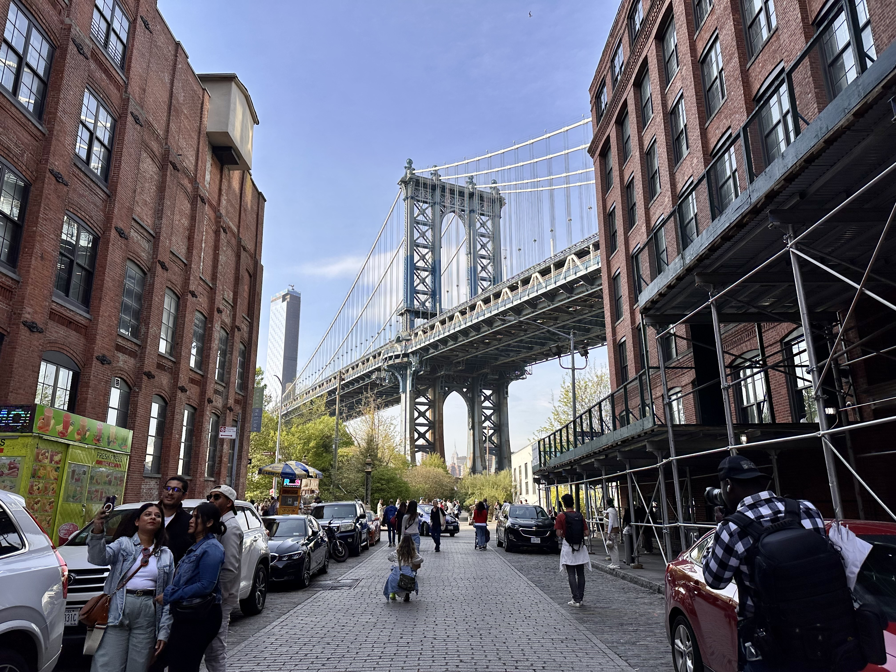
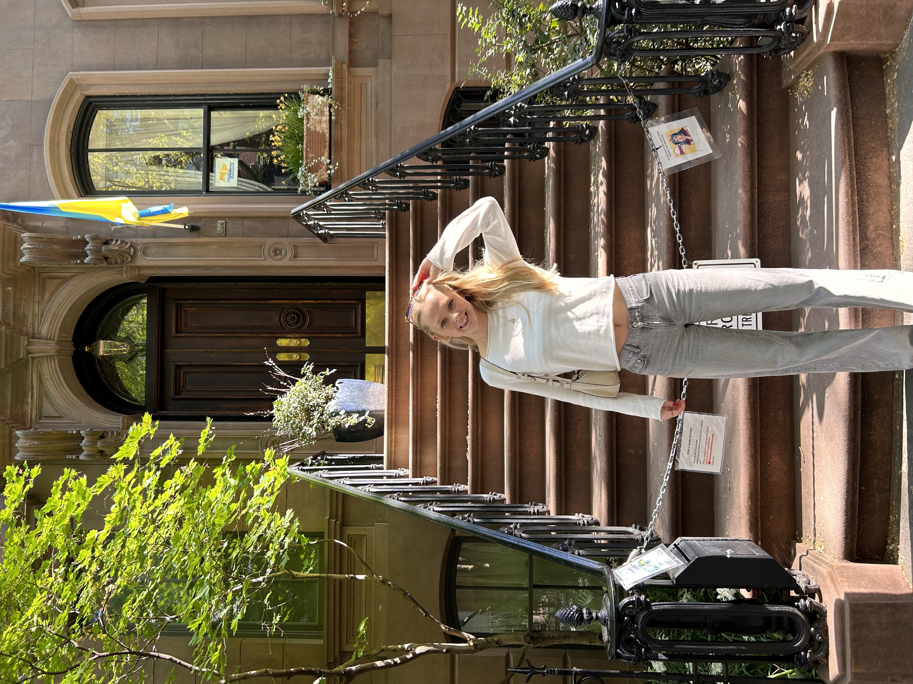
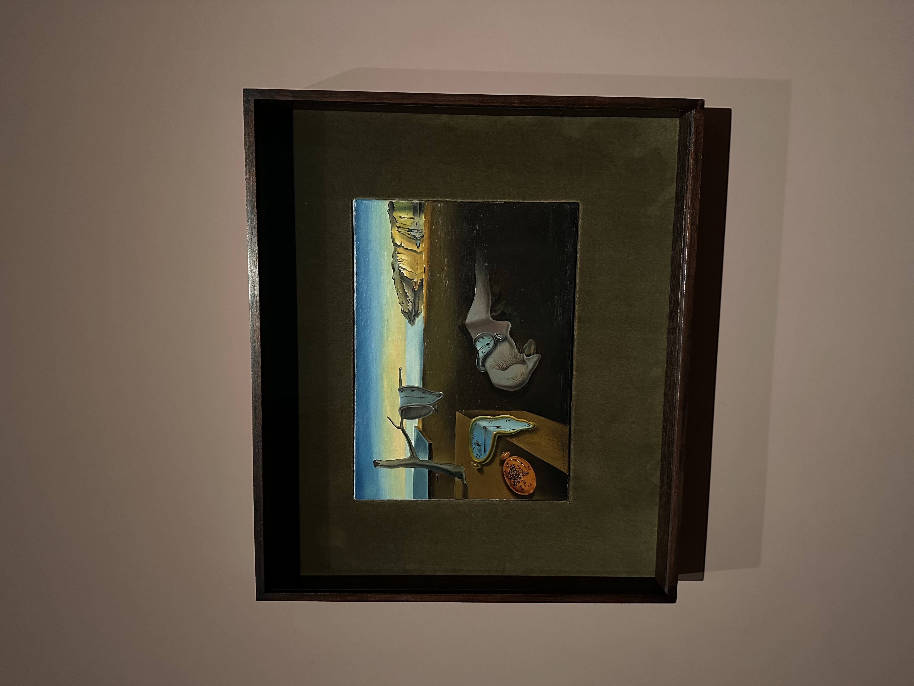
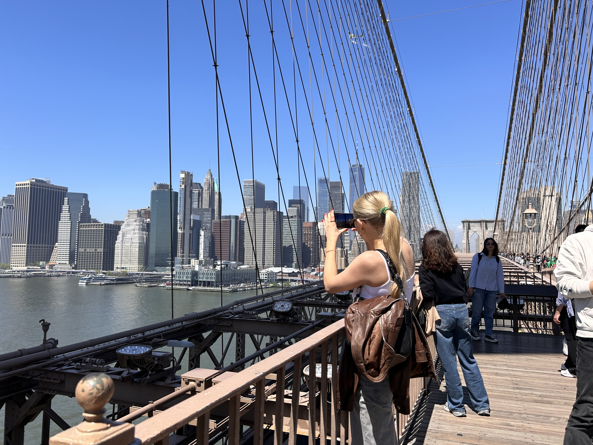
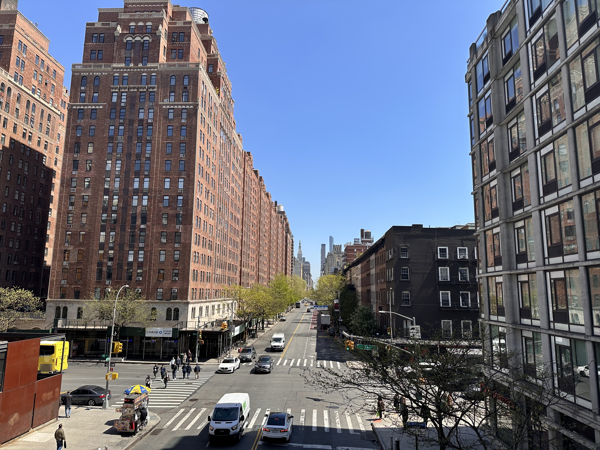
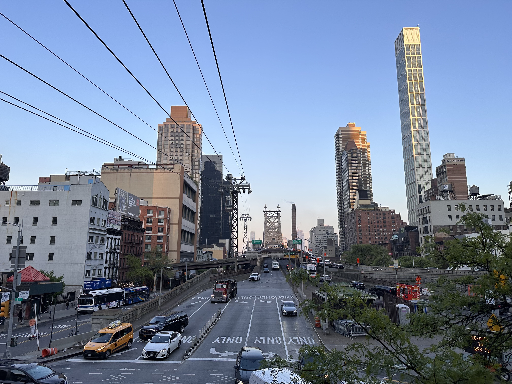
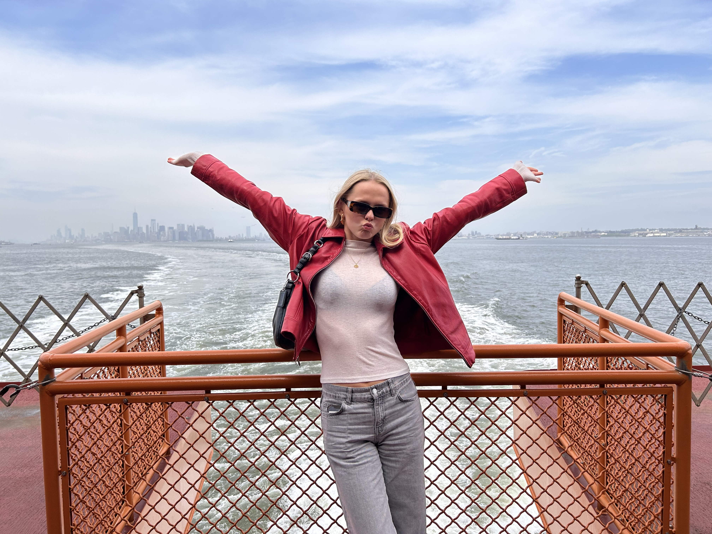
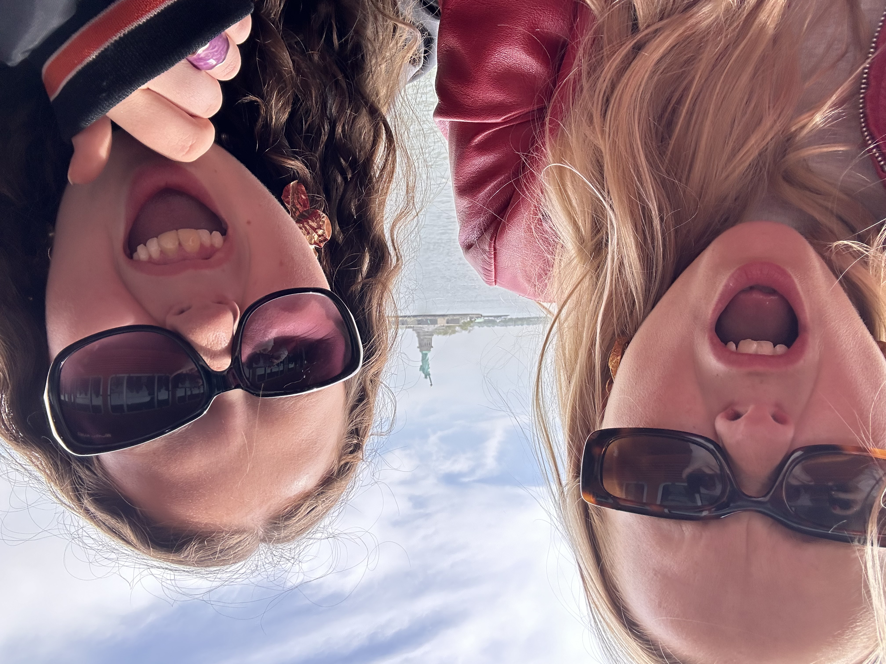

DUMBO
Ett mysigt område med bra vintage-marknader. Jag hade kunnat stå och titta på bron (i bilden) hur länge som helst, så vacker plats. Även en av Gossip Girls många inspelningsplatser!

Tips på sevärdigheter att gå till inför sin nästa New York resa!
Ett mysigt område med bra vintage-marknader. Jag hade kunnat stå och titta på bron (i bilden) hur länge som helst, så vacker plats. Även en av Gossip Girls många inspelningsplatser!

En riktig nostalgiström för ett fan. Jag kunde knappt ta in det när jag själv var där. Helt ok mycket folk på plats när vi var där, man fick vänta några minuter för att få ta en bild framför dörren. Glöm inte att visa respekt för de som bor där!

Perfekt för konstälskaren – och ett stort plus för studentpriser! Såg så mycket cool konst och gamla klassiker som hänger där inne. Finns även ett mysigt cafe längst ner i en liten park.

Den mest storslagna promenaden i staden. Tar en stund att gå över, inte minst för avståndet men för det går mycket folk där samtidigt, men så värt. Om ni vill undvika människorna rekommenderar jag att gå så tidigt som möjligt. Helst vid soluppgången!

Upphöjd park byggd på en gammal spårväg. En mysig promenad med fina utsikter. En lång mysig och avslappande promenad med mycket historia. Håll ett öga ut för frihetsgudinnan...

Ett billigt alternativ för att se hela staden från en lift – ingår i kollektivtrafikkortet! Det var så roligt att åka fram och tillbaka faktiskt, vi fick se många fina vyer.

Helt gratis färja med fantastisk utsikt över Frihetsgudinnan. Här har de även spelat in ett avsnitt av Sex and the City, ett true fan vet exakt vilket.

